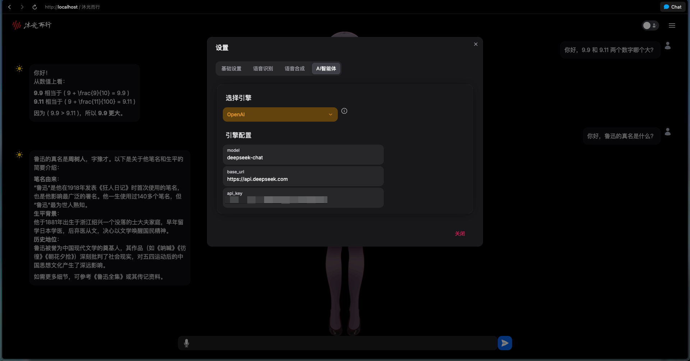
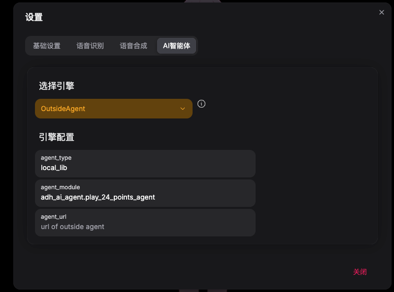
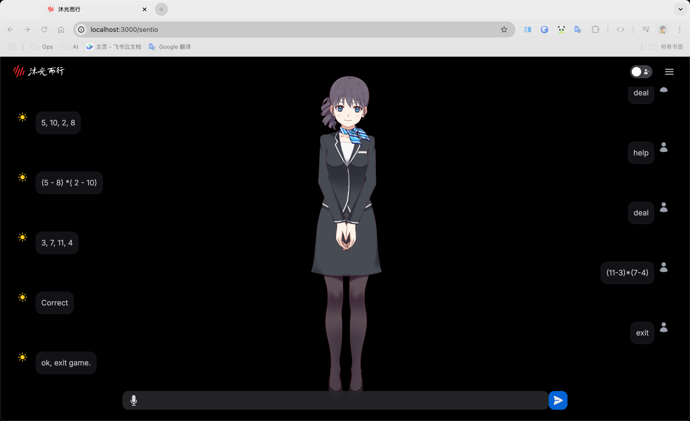
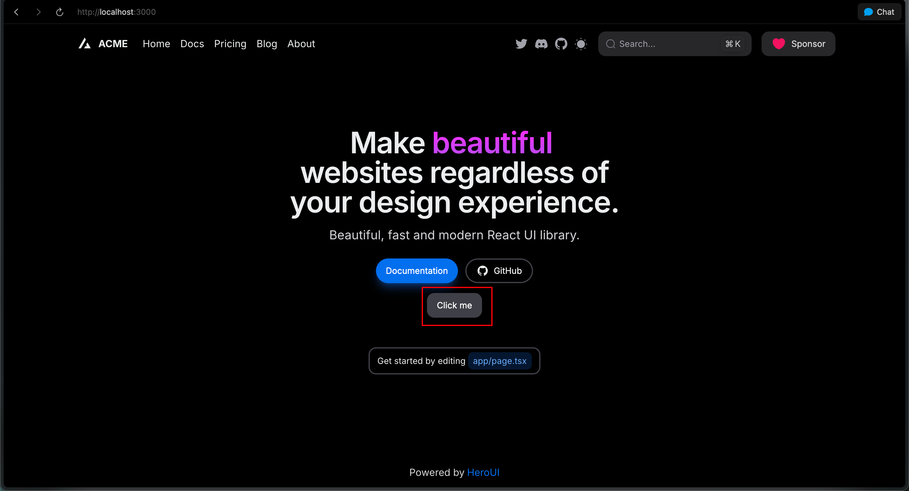
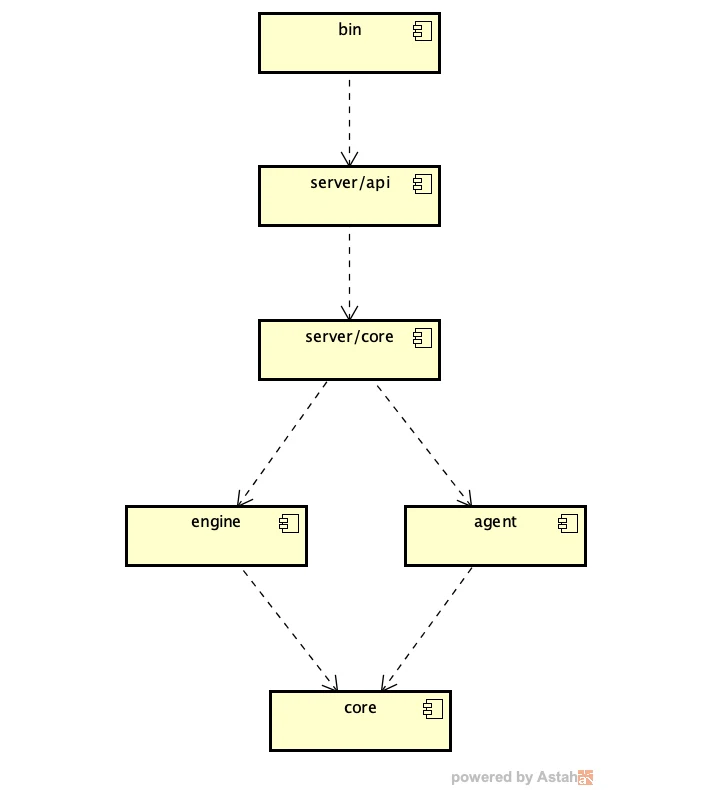
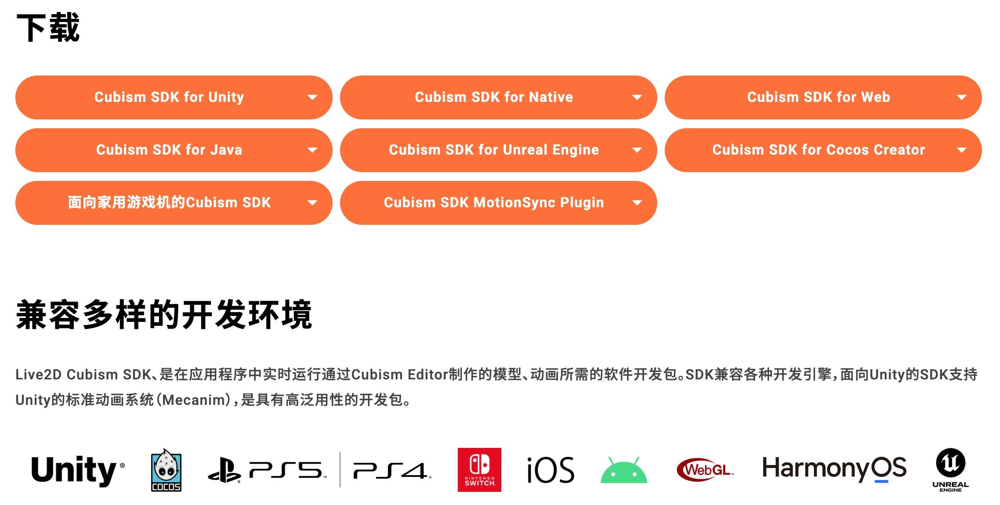
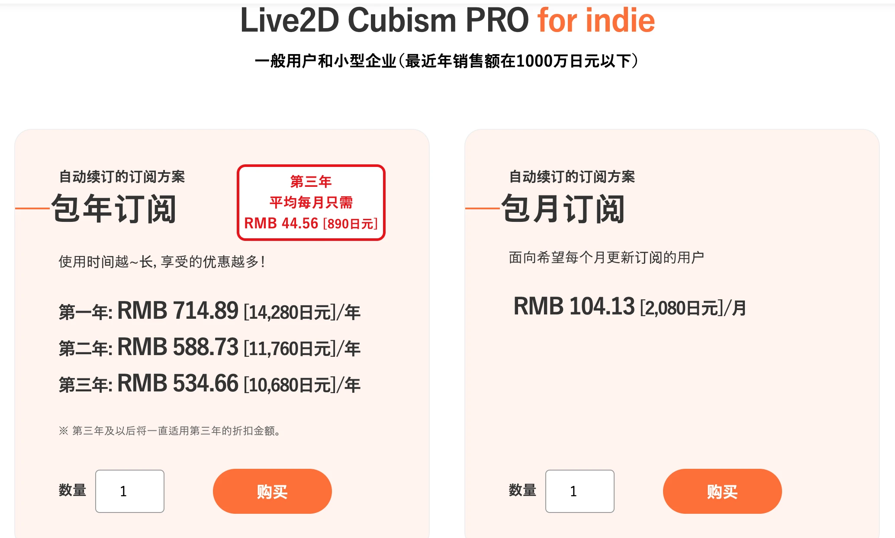
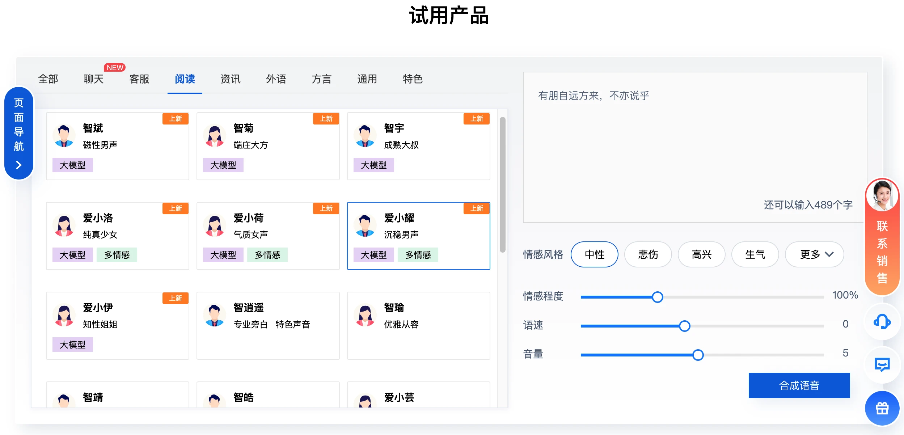
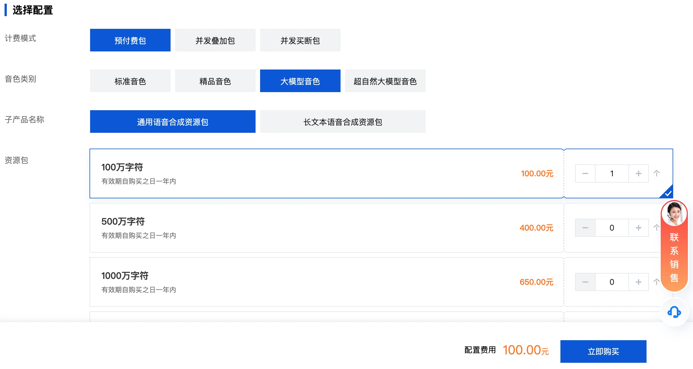

准备开发服务器，安装基础工具
开发服务器推荐使用 Ubuntu Linux。
前端开发机大家可以自由使用自己喜欢的操作系统，Windows、macOS，Linux 都可以。开发服务器起码要配备 Nvidia 独立显卡，最低要求是 8GB 显存的 Nvidia RTX 3070。内存至少 16G，建议 32G。开发服务器的硬件配置当然是越高越好了。前端开发机没有特别的硬件要求，也不需要配置 Nvidia 独立显卡。可以在前端开发机上通过 SSH 连接到后端开发服务器，并且使用 VS Code 的远程开发功能很方便地开发服务器端的代码。如果没有特别说明，课程视频中的所有操作均在开发机上完成。
编程语言方面，后端服务器使用 Python，前端开发机使用 TypeScript 和 JavaScript。
step 1：准备开发服务器
开发服务器使用 Ubuntu 22.04 及以上版本即可。Windows 用户可以通过 WSL2 安装 Ubuntu，具体安装请参考微软的官方文档： https://learn.microsoft.com/zh-cn/windows/wsl/install
开发服务器也可以选择使用云端的虚拟主机，不过必须选择配置了 Nvidia GPU 的虚拟主机。我推荐两个云平台 AutoDL 和 UCloud。可以选择配置了 RTX 3090 GPU 的虚拟主机，这个型号的机器性价比最高。AutoDL 的包月价格低于 UCloud，但是按使用小时付费的单价高于 UCloud。这两个平台的 GPU 虚拟主机的价格都比阿里云低不少。阿里云并没有配置 3090、4090 消费级显卡的 GPU 虚拟主机。
这两个云平台的地址列在课程视频相关信息中。
- AutoDL： https://www.autodl.com/home
- UCloud： https://www.compshare.cn/
开发服务器准备好之后，需要确保在前端开发机能够通过 SSH 远程登录到服务器。我建议使用私钥来登录服务器，而不是每次都输入密码。一个原因是更方便，另一个原因是更安全。
Ubuntu 服务器准备好之后，如果不是云端虚拟主机，我们需要手工为 Ubuntu 安装 Nvidia 驱动。使用 SSH 远程登录到服务器做操作就可以了。
# 显示系统支持的所有 Nvidia 驱动列表
sudo ubuntu-drivers list --gpgpu
# 自动安装系统认为最适合的 Nvidia 驱动
sudo ubuntu-drivers install
# 也可以手动安装某个型号的 Nvidia 驱动，这样做之前需要确信这个驱动是可以正常工作的
sudo ubuntu-drivers install nvidia:535
驱动安装之后，需要重新启动服务器。
sudo shutdown -r now
服务器重启之后，再次用 SSH 登录到服务器。执行以下命令：
nvidia-smi
如果没有报错，说明 Nvidia 驱动已经正常工作。
如果 nvidia-smi 命令报错：
Failed to initialize NVML: Driver/library version mismatch
说明 Nvidia 驱动没有正常工作，需要重新安装 Nvidia 驱动。
sudo apt-get purge nvidia*
sudo ubuntu-drivers install nvidia
安装 Nvidia 驱动的相关文档：
https://documentation.ubuntu.com/server/how-to/graphics/install-nvidia-drivers/index.html
https://forums.developer.nvidia.com/t/which-nvidia-driver-and-ubuntu-version-to-use-without-breaking-my-machine/308787
step2：安装 Python 和 uv
接下来需要安装 Python，我们使用 Ubuntu 自带的 Python 即可。Ubuntu 22.04 默认使用 Python 3.10，Ubuntu 22.04 默认使用 Python 3.12，使用这两个版本都没问题。
sudo apt install python3 python3-pip python3-dev
uv 是 Python 的依赖管理工具，目前的受欢迎程度已经超越了 poetry 及 pipenv 等同类工具。我们未来创建的开发项目也会使用 uv。
在 Linux 上使用以下命令安装 uv。uv 的官方网站在墙外，有时候连接会有问题，请自备梯子。
curl -LsSf https://astral.sh/uv/install.sh | sh
执行以下命令确认可以调用 uv。
uv --version
接下来我们使用 uv 创建一个开发项目。
mkdir -p ~/work
cd ~/work
uv init learn_adh
cd learn_adh
编辑 pyproject.toml 文件，在文件开头加入清华大学的 Python 镜像。
[[tool.uv.index]]
url = "https://pypi.tuna.tsinghua.edu.cn/simple"
default = true
添加未来要用到的 Python 库。
uv add openai
step3：访问云端满血版 DeepSeek 和 Qwen3
因为我们这套课程选择使用开源 LLM DeepSeek 和 Qwen3。DeepSeek 和 Qwen3 都可以本地部署，也都可以通过 API 调用云端部署的满血版。两者都是需要的，为了调用云端部署的满血版，我们需要有一个云平台账号，并且少量充一些钱。我推荐使用阿里云的百炼平台，通过这个平台可以使用满血版的 DeepSeek 和 Qwen3。
百炼平台地址： https://www.aliyun.com/product/bailian
在百炼控制台使用阿里云账号登录，访问模型广场，首先开通模型调用服务。
https://bailian.console.aliyun.com/?tab=model#/model-market
点击页面底部的 api_key，然后创建一个新的 api_key。
查看一下已部署 Qwen3 的模型型号列表：
https://bailian.console.aliyun.com/?tab=model#/model-market/detail/qwen3
最新满血版 Qwen3 的快照 id 是 qwen3-235b-a22b，记下这个 model id。
然后写个测试代码，测试一下调用云端部署的 DeepSeek 和 Qwen3。
import os
from openai import OpenAI
client = OpenAI(
api_key = os.getenv("DASHSCOPE_API_KEY"), # 替换为您的 API Key
base_url = "https://dashscope.aliyuncs.com/compatible-mode/v1"
)
model_id = "deepseek-r1"
# model_id = "qwen3-235b-a22b"
enable_thinking = False
if model_id == "deepseek-r1":
enable_thinking = True
completion = client.chat.completions.create(
model=model_id,
messages=[
{'role': 'user', 'content': '9.9 和 9.11 谁大'}
],
extra_body={"enable_thinking": enable_thinking}
)
if model_id == "deepseek-r1":
print(" 思考过程：")
print(completion.choices[0].message.reasoning_content)
print(" 最终答案：")
print(completion.choices[0].message.content)
使用 uv 运行测试代码：
uv run python test_aliyun_llm.py
分别使用 deepseek-r1 和 qwen3-235b-a22b 运行一下例子。如果都没报错，云端满血版 DeepSeek-R1、Qwen3 都可以正常访问了。
step4：本地部署 DeepSeek 和 Qwen3
接下来我们在开发服务器上本地部署 DeepSeek-R1 和 Qwen3。我推荐使用的 LLM 部署工具是开源的 Ollama。在所有 LLM 部署工具中，Ollama 对硬件的要求是最低的。
首先在服务器上安装并运行 Ollama。Ollama 的官方网站在墙外，有时候连接会有问题，请自备梯子。
curl -fsSL https://ollama.com/install.sh | sh
Ollama 主要包括两部分，Ollama daemon 后台服务程序和 Ollama 命令行工具。访问所有部署的 LLM 都是通过其后台服务。Ollama 的后台服务，默认情况下只接受本机的进程的访问。如果确信当前网络是一个完全安全的网络环境，并且需要通过其他机器访问后台服务，需要修改 Ollama 的配置：
sudo systemctl edit ollama.service
在 Service 部分加入以下一行：
[Service]
Environment="OLLAMA_HOST=0.0.0.0"
0.0.0.0 代表接受所有外部机器的访问请求。也可以设置为某个安全网段的 IP 地址，只接受这个安全网段的机器的访问请求。
接下来我们使用 Ollama 部署 Qwen3 的 8b 模型。
ollama run qwen3:8b
Ollama 平台上有 Qwen3 的所有版本，包括 235b 满血版。不过对于普通机器 8b 版和 14b 版是最合适的，更高的版本对硬件要求越来越高，而且跑起来非常慢，无法支持 LLM 应用的正常运行。
然后再使用 Ollama 部署 DeepSeek-R1 的 7b 模型。
ollama run deepseek-r1:7b
同样的，Ollama 平台上有 DeepSeek-R1 的所有版本，包括 671b 满血版。普通机器部署 14b 以下的版本就可以了。
然后写个测试代码，测试一下调用本地部署的 DeepSeek 和 Qwen3。
import os
from openai import OpenAI
client = OpenAI(
api_key = "ollama", base_url = "http://localhost:11434/v1" )
completion = client.chat.completions.create( # model="deepseek-r1", # 可按需更换模型名称
model="qwen3", # 可按需更换模型名称
messages=[ {'role': 'user', 'content': '9.9 和 9.11 谁大'} ] )
print(" 最终答案：") print(completion.choices[0].message.content)
使用 uv 运行测试代码。
uv run python test_ollama_llm.py
分别使用 deepseek-r1 和 qwen3 运行一下例子。如果都没报错，云端满血版 DeepSeek-R1、Qwen3 都可以正常访问了。
除了访问的 API 地址和模型名称不同外，两个测试代码还有一个主要区别是，Ollama 本地部署的非满血版 LLM，返回的消息中不包括 reasoning_content。因为 Ollama 部署的非满血版 LLM 都是使用开源 LLM 蒸馏出来的，消息中并不会返回推理过程。
安装测试数字人开发工具ADH
step 1：ADH 项目简介
2D 数字人方面，我推荐一个很棒的开源项目 AWESOME-DIGITAL-HUMAN，缩写为 ADH。这个开源项目是我国的优秀开发者一力辉老师在去年开发的。这节课我就来介绍如何在安装 ADH 并且做一些测试。
一力辉老师的 ADH 项目的官方地址在：
https://github.com/wan-h/awesome-digital-human-live2d
我 fork 了这个项目，我的 ADH 项目分支的的地址在：
https://github.com/freecoinx/awesome-digital-human-live2d
大家可以使用我的 ADH 项目版本，因为我对代码做了一些修改，解决了其中的一些问题。如果直接使用一力辉老师的版本，还需要自己做这些 DIY。ADH 的最新版本是 3.0.0 版，最近才发布。我会及时将官方 ADH 项目最新的代码合并到我的 ADH 项目，确保我的 ADH 项目代码与一力辉老师的 ADH 项目保持同步。
ADH 项目分成后端和前端两部分。后端使用 Python 开发，开发框架是 FastAPI。前端使用 TypeScript 开发，开发框架是 Next.js + React + HeroUI。前后端可以部署在同一台机器上，也可以部署在两台不同的机器上。这节课我演示将 ADH 后端部署在使用 Ubuntu 的开发服务器上，将 ADH 前端部署在使用 Windows 的前端开发机上。
首先我们来部署 ADH 后端。
step 2：部署 ADH 后端
首先我们使用 SSH 登录到开发服务器。
ADH 后端会用到 FFmpeg，所以需要在开发服务器安装一下，执行以下命令：
sudo apt update
sudo apt install ffmpeg
然后我们用 Git 克隆 ADH 项目的代码。
cd ~/work
git clone https://github.com/freecoinx/awesome-digital-human-live2d.git
cd awesome-digital-human-live2d
# 初始化一个 uv 项目
uv init --python 3.12
vi pyproject.toml
添加清华大学的 Python 镜像，这样未来安装 Python 依赖的速度会快很多。
[[tool.uv.index]]
url = "https://pypi.tuna.tsinghua.edu.cn/simple"
default = true
添加所有依赖到 uv 创建的虚拟环境。
uv add $(cat requirements.txt)
接下来使用模版来创建 ADH 后端的配置文件。
cd configs
cp config_template.yaml config.yaml
ls config.yaml
COMMON:
NAME: "Awesome-Digital-Human"
VERSION: "v3.0.0"
LOG_LEVEL: "DEBUG"
SERVER:
IP: "0.0.0.0"
PORT: 8880
WORKSPACE_PATH: "./outputs"
ENGINES:
ASR:
SUPPORT_LIST: [ "difyAPI.yaml", "cozeAPI.yaml", "tencentAPI.yaml", "funasrStreamingAPI.yaml"]
DEFAULT: "difyAPI.yaml"
TTS:
SUPPORT_LIST: [ "edgeAPI.yaml", "tencentAPI.yaml", "difyAPI.yaml", "cozeAPI.yaml" ]
DEFAULT: "edgeAPI.yaml"
LLM:
SUPPORT_LIST: []
DEFAULT: ""
AGENTS:
SUPPORT_LIST: [ "repeaterAgent.yaml", "openaiAPI.yaml", "difyAgent.yaml", "fastgptAgent.yaml", "outsideAgent.yaml" ]
DEFAULT: "repeaterAgent.yaml"
这个配置文件只是 ADH 后端的主配置文件。在 configs 目录下还有其他配置文件。不过 ADH 3.0.0 版默认使用的是在前端界面的设置，而不是后端的这些配置文件。
OK，我们使用 uv 来启动 ADH 后端。
cd ~/work/awesome-digital-human-live2d
uv run python main.py
ADH 后端启动在开发服务器的 8880 端口。
step 3：部署 ADH 前端
接下来我们在前端开发机上部署 ADH 前端。
首先需要在前端开发机上安装 Node.js。从 Node.js 官网下载最新的安装包安装即可。
下载地址： https://nodejs.org
然后在命令行窗口使用 npm 安装以下几个包：
npm install -g next
npm install -g heroui-cli
npm install -g pnpm
还需要在前端开发机上安装 Git 命令行工具。
然后打开一个命令行窗口，执行以下命令：
cd awesome-digital-human-live2d/web
安装前端所需要的依赖包。
pnpm install
接下来编辑一个 ADH 前端的配置文件。
cp .env_template .env
NEXT_PUBLIC_SERVER_IP="192.168.123.149"
NEXT_PUBLIC_SERVER_PROTOCOL="http"
NEXT_PUBLIC_SERVER_PORT="8880"
NEXT_PUBLIC_SERVER_VERSION="v0"
NEXT_PUBLIC_SERVER_MODE="prod"
只需要修改 NEXT_PUBLIC_SERVER_IP 和 NEXT_PUBLIC_SERVER_PORT 两项就可以了，修改为运行 ADH 后端的开发服务器的 IP 地址和端口号。
build 前端的代码如下：
pnpm run build
build 成功之后，运行 ADH 前端。
pnpm run start
然后使用浏览器访问 http://localhost:3000 ，做一下测试。
需要先在前端做一下设置。
ADH 可以使用腾讯云的 ASR 和 TTS 服务，需要先开通腾讯云账号，并且少量充值。ASR 用来支持语音输入，把语音转成文本。TTS 用来把数字人的回复转成语音。腾讯云的 ASR 和 TTS 价格有些贵，不如百度云的 ASR 和 TTS。不过最近发布的 ADH 3.0.0 不知为何取消了对百度云 ASR、TTS 的支持。未来我考虑在我的 ADH 项目分支中重新加上对百度云 ASR、TTS 的支持。这里我们先不使用 ASR，TTS 方面先用微软免费的 edgeTTS。
设置 TTS 和 Agent。
先用 RepeaterAgent 做一下测试，再用 OpenAI API 做一下测试。
这里 LLM 的配置虽然使用的是 OpenAI API，其实并不是真的访问 OpenAI 的 LLM，而是访问我们上节课在本地部署的开源 LLM qwen3:8b。当然也可以使用本地部署的 deepseek-r1:7b，或者云端的满血版 Qwen3、DeepSeek-R1。
下面我们来测试：使用文本与数字人交互。我问了数字人 3 个问题：
- 你好，9.9 和 9.11 两个数字哪个大？
- 你好，鲁迅的真名是什么？
- 你好，请简单介绍一下《封神演义》，不超过 5 句话。
刚才做测试使用的是本地部署的 qwen3:8b，还可以修改 LLM 的相关配置，改成使用本地部署的 deepseek-r1:7b，或者改成使用云端阿里百炼平台的满血版 Qwen3、DeepSeek-R1。

实现外部AI Agent并与ADH对接
AI Agent 的开发框架、开发工具非常多。我推荐大家先从轻量级的开发框架入手开始学习和开发，直到确信自己要实现的需求，轻量级开发框架确实无法满足要求。
我在这套课程中选择的轻量级开发框架是 OpenAI 今年新近发布的 Agent SDK。
step 1：创建 AI Agent 项目
AI Agent 的功能通常都特定于具体的需求，因此 AI Agent 应该与通用的 ADH 分隔开。我们需要创建一个新的 Python 项目。
登录到开发服务器：
cd work
uv init adh_ai_agent
cd adh_ai_agent
然后编辑 pyproject.toml，在前面加上以下内容：
[[tool.uv.index]]
url = "https://pypi.tuna.tsinghua.edu.cn/simple"
default = true
[build-system]
requires = ["setuptools>=42"]
build-backend = "setuptools.build_meta"
这里我是把新创建的 adh_ai_agent 项目作为一个 Python 库来使用。因为 Agent SDK 本身就是一个 Python 库，ADH 也可以以库的方式来调用 adh_ai_agent。这样实现是最简单的，我们先别把事情搞得太复杂。未来适当时候，也可以改成 RESTful API 调用。
添加对 Agent SDK 的依赖：
uv add openai-agents
然后我们创建一个测试代码：
mkdir adh_ai_agent
cd adh_ai_agent
vi my_agent.py
内容为：
def test_hello():
print("Hello from adh-ai-agent!")
ADH 项目的 pyproject.toml 也需要做些修改：
cd ~/work/awesome-digital-human-live2d
vi pyproject.toml
加入以下内容：
[tool.uv]
config-settings = { editable_mode = "compat" }
然后我们把 adh_ai_agent 以开发项目的形式添加到 ADH 项目的依赖中：
cd ~/work/awesome-digital-human-live2d/
uv pip install -e "../adh_ai_agent"
注意：必须以这种方式添加依赖项目，这样当依赖项目的代码修改之后，ADH 才可以立即使用最新的代码。
然后编辑一个测试文件 test_agent.py：
from adh_ai_agent.my_agent import test_hello
test_hello()
运行这个测试文件：
uv run python test_agent.py
如果没有报错，说明从 ADH 项目中调用 adh_ai_agent 项目的代码成功了。
step 2：开发一个 OutsideAgent
上节课中我们使用的是 OpenaiAgent 这个 ADH Agent 类，来实现与 LLM 的对接。这节课我们需要实现一个新的 ADH Agent，来支持调用外部的 AI Agent。这里我说的 ADH Agent 特指 ADH 项目中的 Agent 类，大家不要与我们开发的外部 AI Agent 搞混了。
一力辉老师开发的 repeaterAgent.py 是一个最简单的 ADH Agent，可以作为一个模版来开发新的 ADH Agent。在 digitalHuman/agent/core 子目录中。
我基于 repeaterAgent.py 创建了一个新的 outsideAgent.py。
在这个 OutsideAgent 类的 run() 函数中，我使用 importlib 动态加载了外部 AI Agent 的模块。
然后在 run() 函数内，简单调用了外部 AI Agent 模块的 chat_with_agent() 函数。看起来非常简单，目前需要做的只是这些，我们尽量保持简单。
还需要修改 digitalHuman/agent/core 子目录中的 __init__.py，把新创建的 OutsideAgent 类加进去。
from .difyAgent import DifyAgent
from .repeaterAgent import RepeaterAgent
from .fastgptAgent import FastgptAgent
from .openaiAgent import OpenaiAgent
from .outsideAgent import OutsideAgent # 新增一行
from .agentFactory import AgentFactory
__all__ = ['AgentFactory']
然后在 configs/agents 子目录中为 OutsideAgent 创建一个配置文件 outsideAgent.yaml。
NAME: "OutsideAgent"
VERSION: "v0.0.1"
DESC: " 接入外部 AI Agent 实现 "
META: {
official: "",
configuration: "",
tips: " 外部 AI Agent 的连接器 ",
fee: ""
}
# 暴露给前端的参数选项以及默认值
PARAMETERS: [
{
name: "agent_type",
description: "type of outside agent",
type: "string",
required: true,
choices: [],
default: "local_lib"
},
{
name: "agent_module",
description: "entry module of outside agent",
type: "string",
required: false,
choices: [],
default: ""
}
]
这里有两个参数：
- agent_type 默认值为 local_lib 代表本地 Python 库调用，未来还会增加远程 RESTful API 调用等方式。
- agent_module 是要调用的外部 AI Agent 的入口模块名，这个模块的实现在 adh_ai_agent 项目中。
然后修改 ADH 的主配置文件 configs/config.yaml，在 Agent 部分加入新加的配置文件 outsideAgent.yaml。
step 3：实现外部 AI Agent
所有课程相关代码都会发布到课程的 Gitee 代码库中，所以大家也不需要自己输入代码。
课程相关代码的地址在： https://gitee.com/mozilla88/adh_agent_tutorial.git
我们需要把一些代码复制到 adh_ai_agent 项目中。
cd ~/work
git clone https://gitee.com/mozilla88/adh_agent_tutorial.git
cd adh_ai_agent/adh_ai_agent
cp ~/workspace/adh_agent_tutorial/lesson_03/adh_ai_agent/*.py .
ADH 要调用的外部 AI Agent 的入口模块是我在 adh_ai_agent 项目中使用 Agent SDK 开发的一个最简单的 AI Agent —— 24 点游戏智能体应用。
我先介绍一下 24 点游戏。
24 点游戏是一种非常流行的纸牌游戏，一副纸牌中去掉大小王剩下 52 张牌，每张牌有一个点数，A 是 1 点，J、Q、K 的点数分别是 11、12、13。发牌员给玩家随机发 4 张牌，玩家需要基于这 4 张牌的点数，找到一个四则运算表达式，使得这个四则运算表达式的结果为 24。
玩家有 4 个选择：
- 给出符合要求的表达式
- 选择求助
- 选择放弃，要求重新发牌
- 选择结束游戏
如果玩家给出的表达式是错误的，他可以重新给出表达式，或者要求重新发牌。
这个 Agent 实现起来并不难，我在《LLM 自主智能体应用实战课》中分别使用 3 种 AI Agent 开发框架实现过这个 Agent。我需要将这些代码改造为可以与 ADH 对接的版本。
展示 play_24_points_agent.py 的内容。
这是我们的 24 点游戏智能体的入口模块，代码非常简单。
- 如果用户输入 deal，则调用 call_deal() 函数为用户发牌。
- 用户输入 help，则调用 call_help() 函数给出正确的 24 点游戏表达式。
- 用户输入 exit，则退出当前游戏。
- 用户输入其他内容，则视为一个正则表达式，调用 call_judge() 函数判断表达式是否正确，返回 Correct 或 Wrong。
具体的实现在 play_24_points_game_v2.py 中。
provider = OpenAIProvider(
api_key=API_KEY,
base_url=BASE_URL,
use_responses=False
)
model = provider.get_model("qwen3:8b")
在这个文件中，我们使用的是本地部署的开源 LLM qwen3:8b。也可以使用阿里云百炼平台部署的满血版 Qwen3，只需要改一下 BASE_URL 和 API_KEY。
不过暂时无法使用 DeepSeek-R1，因为 DeepSeek-R1 无论是否为满血版，都不支持 Function Call，而目前这个 24 点游戏智能体的 Agent SDK 实现是依赖 Function Call 的。无法使用 DeepSeek-R1 的这个问题，我在后续课程中会想办法解决。不过 Qwen3 已经非常好用了，所以不是什么大问题。
play_24_points_game_v2.py 文件比较长，我们关心的是 call_deal()、call_help()、call_judge() 3 个入口函数。实现细节这节课我不做详细讲解，留在后面的课程中再讲。
step 4：运行起来看看效果
最后，我们把 ADH 运行起来看看实现的效果。
我们先编辑一个 bash 脚本来启动 ADH 后端。
run_adh_backend：
#!/bin/sh
export EXAMPLE_API_KEY="ollama"
export EXAMPLE_BASE_URL="http://127.0.0.1:11434/v1"
cd ~/work/awesome-digital-human-live2d
uv run python main.py
运行这个 bash 脚本。
然后在 Windows 开发机上启动 ADH 前端。
在前端的配置中，把 AI 智能体设置为 OutsideAgent，并且加上 AI Agent 的入口模块名 adh_ai_agent.play_24_points_agent。
在 Windows 开发机上打开浏览器，访问 http://localhost:3000 做一下测试。


ADH前端开发与应用集成
按照目前我们已经搭建的系统架构，系统可以划分为三层：
- ADH 前端，包括运行在浏览器中的代码和其所依赖的 Next.js Server，编程语言是 TypeScript。
- ADH 后端，使用 FastAPI 实现，编程语言是 Python。
- ADH 后端调用的 AI Agent 实现。目前是以 Python 本地库的方式来调用，未来也可以改为以 RESTful API 的方式调用。
ADH 前端是 AI Agent 驱动的实时数字人应用的 UI 层。有些同学不大重视 UI 层的设计和开发，其实对于 AI Agent 应用来说，UI 层仍然非常重要。行百里者半九十，当你费力开发了一个很强大的 AI Agent 应用，却因为拙劣的 UI 设计，让用户使用起来非常不方便，无人愿意买单，那么最后你还是会失败。
ADH 前端使用到的技术包括以下两个方面：
- 基于 Next.js + React + HeroUI 的前端开发
- 基于 Live2D 的 2D 数字人定制
Step 1：Next.js 简介
Next.js 是一个基于 React 的 Web 前端开发框架。与其他纯浏览器端的 Web 前端开发框架不同的是，一个 Next.js 应用同时包括了浏览器端运行的代码和在服务器端运行的代码。Next.js 应用的架构遵循标准的 BFF（Backend for Frontend）架构模式。
Next.js 与 React 的关系和区别
Next.js 是基于 React 库的，虽然很多人对 React 心存不满，React 目前仍然是排名第一的浏览器端 UI 开发库。React 同样也是很多开源 AI Agent 开发工具使用的 UI 开发库。
Next.js 和 React 的区别是：
- React 只是一个浏览器端的 UI 开发库，而 Next.js 是一个完整的 UI 开发框架。Next.js 除了可以开发运行在浏览器端的代码，还可以开发运行在服务器端（基于 Node.js）的代码。
- React 只支持浏览器端渲染，而 Next.js 既支持浏览器端渲染，也支持服务器端渲染。服务器端渲染类似 20 年前流行的那种瘦客户端 Web 应用，例如 Ruby on Rails 应用和大多数基于 Spring 的 Java Web 应用。充分利用服务器端渲染，可以大幅加快浏览器中的展现速度（因为服务器只需要发送较少的 HTML + JS），并且有利于 SEO。
Next.js 的版本
Next.js 目前最新的大版本是 15 版。ADH 是一个比较新的项目，一力辉老师最新发布的 ADH 3.0.0 版已经将 Next.js 升级到 15 版。我的 ADH 分支项目和一力辉老师的 ADH 项目保持同步，使用相同的 Next.js 版本。通过 ADH 项目来学习 Next.js 是一个很好的途径。
Next.js 学习文档
Next.js 在 13 版之后变化比较大，项目代码的主目录从 pages 变成了 app，在 app 目录下编写 Next.js 代码的方式也发生了很大变化。
Next.js 官方发布了一个详细的迁移教程：How to migrate from Pages to the App Router
https://nextjs.org/docs/pages/guides/migrating/app-router-migration
大家如果有一些 React 开发经验的话，Next.js 其实并不难学，初学者遇到的主要问题是误导性的内容实在太多。目前国内中文版 Next.js 相关教程、图书大多数讲的都是 Next.js 12 版，已经完全过时了。使用这些教程、图书来学习 Next.js，会遇到大量问题，导致大量时间浪费。我给大家推荐一个 Next.js 教程，大家可以课后找来学习。
- Learn Next.js 中文教程： https://qufei1993.github.io/nextjs-learn-cn/ ，这个教程是一位“为爱发电”的同学 qufei1993 根据 Next.js 官方教程翻译的中文版
- 另外有一个教程也值得一读，NextJS 13.4 App Router 入门教程： https://juejin.cn/post/7231564187255881765
Next.js 支持的浏览器版本
测试 Next.js 应用非常简单，使用一个 Web 浏览器就可以做测试，不需要安装任何其他应用。
Next.js 官方文档有个页面列出了支持的浏览器版本： https://nextjs.org/docs/architecture/supported-browsers
Next.js 支持以下桌面版浏览器：
- Chrome 64+
- Edge 79+
- Firefox 67+
- Opera 51+
- Safari 12+
除了一些奇怪的国产浏览器之外，基本上所有主流的桌面浏览器都没有问题。
可以使用浏览器访问 https://ie.icoa.cn/ ，来确定浏览器内核的版本。
对于智能手机来说，Next.js 无法支持很老的智能手机自带的浏览器。在这些老手机上可以安装移动版的 Chrome 或者 Firefox。如果必须支持老手机上自带的浏览器，可以使用 Next.js 的老版本。
例如我测试过，Next.js 13.0.5 及以下版本，可以支持一台 10 年前 Android 6.0 手机上自带的浏览器，内核版本为 WebKit 537.36，相当于 Chrome 62.0.3202.84。
对于微信来说，iOS 版使用 WKWebview 内核，Android 版使用 XWeb 内核。这两个内核支持 Next.js 都没有问题，因为有一些开发者是使用 Next.js 开发微信小程序或者微信服务号。
Step 2：HeroUI 简介
什么是 HeroUI？
按照官方的描述：
HeroUI 是一个 React UI 库，旨在帮助开发者构建美观且易于访问的用户界面。它基于 Tailwind CSS（以下简称 Tailwind）和 React Aria 构建。
HeroUI 的主要目标是简化开发流程，提供美观且适应性强的系统设计，以提升用户体验。
HeroUI 与 Tailwind 的关系和区别
HeroUI 结合了 Tailwind 和 React Aria 的强大功能，提供了一套完整的组件，用于构建可访问且可定制的用户界面。HeroUI 使用 Tailwind 作为它的样式引擎，开发者可以在 HeroUI 组件中使用所有 Tailwind 类，从而确保编译后的 CSS 保持最佳大小。
HeroUI 与 Tailwind 的区别是：
- Tailwind 组件库，例如 Tailwind UI、Flowbite 或 Preline（仅举几例），只提供了精选的 Tailwind 类来为已有的组件添加样式。它们不提供任何 React 特定的组件和相关逻辑。
- 与这些 Tailwind 组件库相比，HeroUI 是一个完整的 UI 库，提供了一套可访问且可定制的 React 组件。因此 HeroUI 在 React 应用中是开箱即用的，对于开发者更加方便。
HeroUI 学习文档
我推荐大家直接去读 HeroUI 的官方文档，而不是那些二手、三手的中文文档。安装一个 DeepL 之类的浏览器扩展，可以很容易将文档翻译为中文。
HeroUI 与 NextUI 的关系
HeroUI 原名为 NextUI，是与 Next.js 应用配合使用的 UI 库。但是后来 NextUI 还支持其他的 Web 前端开发框架例如 Vite、Remix、Astro 等，继续叫做 NextUI 就不合适了，所以改名为 HeroUI。
今年前不久 NextUI 已经被 HeroUI 正式替代。NextUI 不再有人维护，因此所有的 NextUI 应用都应该迁移到 HeroUI。
之前 ADH 前端使用的 UI 库是 NextUI。在最新发布的 3.0.0 版中，一力辉老师已经将 ADH 前端迁移到了 HeroUI。
Step 3：演示创建一个新的 Next.js + HeroUI 项目
首先，我们在 Windows 前端开发机上打开命令行窗口，使用 npm 安装两个工具：
$ npm install -g create-next-app
$ npm install -g heroui-cli
我们可以使用这两个工具来创建 Next.js 和 HeroUI 项目。
运行以下命令来创建一个预先配置了 HeroUI 的 Next.js 项目：
$ npx create-next-app -e https://github.com/heroui-inc/next-app-template
✔ What is your project named? … my-heroui-app
Creating a new Next.js app in /Users/keti/Demo/my-heroui-app.
Downloading files from repo https://github.com/heroui-inc/next-app-template. This might take a moment.
Installing packages. This might take a couple of minutes.
added 507 packages in 1m
163 packages are looking for funding
run `npm fund` for details
Success! Created my-heroui-app at /Users/keti/Demo/my-heroui-app
Inside that directory, you can run several commands:
npm run dev
Starts the development server.
npm run build
Builds the app for production.
npm start
Runs the built app in production mode.
We suggest that you begin by typing:
cd my-heroui-app
npm run dev
注：
除了使用以上方式，也可以使用 heroui-cli 来创建一个 Next.js 项目：
$ npx heroui-cli init -t app
使用 heroui-cli 创建项目时，可以选择使用 Next.js 或者 Vite 等前端开发框架。
在已有的 Next.js 项目中安装 HeroUI 组件：
# 添加一个或多个组件
$ npx heroui-cli add button input
# 添加主库 @heroui/react，包括所有组件
$ npx heroui-cli add --all
项目创建好之后，我们使用 VS Code 打开创建好的项目目录。
在 13 版以上的 Next.js 应用的 app 目录内有两个 tsx 文件：
- 一个是 layout.tsx，是 SPA（单页面应用）整体的 html 模版
- 另一个是 page.tsx，包含项目所有的 React 组件，包含在 layout.tsx 内
如何编写 layout.tsx 请看 Next.js 的官方文档： https://nextjs.org/docs/app/api-reference/file-conventions/layout#root-layout
我们修改一下 page.tsx，测试一下 HeroUI 的 Button 组件：
先安装 @heroui/react
npm install @heroui/react
修改 page.tsx
// 文件头添加以下内容
import { Button } from "@heroui/react";
// 文件头添加以上内容
export default function Page() {
return (
// 添加下面内容
<div>
<Button>Click me</Button>
</div>
// 添加上面内容
)
}
运行起来看一下效果：
$ npm run build
$ npm run start
> next-app-template@0.0.1 start
> next start
▲ Next.js 15.3.1
- Local: http://localhost:3000
- Network: http://192.168.71.167:3000
✓ Starting...
✓ Ready in 157ms
打开浏览器访问： http://localhost:3000

体验过 Next.js + HeroUI 项目的创建，接下来回到我们真正关心的 ADH 项目。
Step 4：ADH 前端的目录结构和配置文件
ADH 前端的目录结构
ADH 的前端部分最初就是一力辉老师使用 create-next-app 工具创建的。目录结构和我们前面使用 create-next-app 创建的测试项目完全一致。
ADH 前端的代码在 ADH 项目的 web 子目录中。使用 dir 列出目录内容。
根目录下的子目录有以下这些：
- node_modules：安装所有的 Node.js 依赖库，所有 Node.js 项目中都有
- app：大的 React 组件，例如主页面
- public：静态内容，包括图片、各种 json 文件等等
- styles：静态 CSS 样式文件和 TTF 字体文件
- components：可重用的较小的 React 组件
- lib：可重用的 TypeScript 库
- hooks：应用的钩子
- i18n：应用国际化相关内容
- examples：在其他应用中集成 ADH 前端的例子
除了这些子目录外，在根目录下还有很多配置文件。
ADH 前端的配置文件
.env：ADH 前端配置文件。
Dockerfile：Docker 镜像的配置文件。我们这套课程不使用 Docker，所以用不到。
其他配置文件都是 Next.js 应用的标准配置文件。
package.json：保存所有 Node.js 依赖库及其版本号。所有 Node.js 项目中都有。
pnpm-lock.yaml：pnpm 包管理器使用的锁定文件。
tsconfig.json：与 TypeScript 相关的配置文件。存在这个文件，则 Next.js 会将项目使用的编程语言设置为 TypeScript，否则项目默认使用的编程语言为 JavaScript。
next-env.d.ts：create-next-app 工具创建新项目时创建的配置文件，不要做任何修改。
next.config.ts：Next.js 项目配置文件，设置与 Next.js 框架相关的配置。
这个文件可以有三种格式：
- next.config.js 对应 CommonJS 语法
- next.config.mjs 对应 ES Module 语法
- next.config.ts，对应 TypeScript 语法
postcss.config.mjs：PostCSS 的配置文件。
PostCSS 是一个使用 JavaScript 工具和插件转换 CSS 代码的工具。它本身没有功能，而是通过插件来实现各种功能。
和 next.config.mjs 配置文件类似，这个文件同样也有三种格式，后缀分别为 .js、.mjs、.ts。
tailwind.config.ts：Tailwind 3.x 版本的配置文件。
这个配置文件在 Tailwind 4 已经被废弃，被 postcss.config.mjs 取代。不过目前 ADH 3.0.0 版中使用仍然是 Tailwind 3.x 版。
Step 5：ADH 前端开发注意事项
开发 Next.js 应用的注意事项
因为 Next.js 项目的 React 组件默认情况是在服务器端渲染的，因此不能再使用只有浏览器端才能使用的全局对象，例如 window、document、fetch 等，以及 canvas 之类的 HTML 元素。要使用这些全局对象，有两种方法：
- 改成客户端渲染，需要在文件开头一行加上 “use client”。
- 将使用这些全局对象的代码，封装在 useEffect 中。
我用以下 Reat 组件 greet.tsx 举个例子：
"use client"
import { useEffect } from 'react';
import { useRouter, usePathname, useSearchParams } from 'next/navigation';
export default function Greet(params) {
const { name } = params;
const router = useRouter();
const pathname = usePathname();
const searchParams = useSearchParams();
const { loggedIn } = false;
// useEffect 钩子
useEffect(() => {
if (!loggedIn) {
alert(document.getElementById('div_01').innerText);
router.push('/');
}
}, [loggedIn]);
return <div id="div_01">Hello: {name} --- {pathname} --- {searchParams}</div>
}
我们运行这个组件看一下效果。
与微信小程序集成
微信小程序是支持内嵌 H5 页面的。对于在微信小程序中集成 ADH 数字人感兴趣的同学，我建议仔细读一下微信团队的相关开发文档，可以从以下三篇文档开始学习：
- 技术选型：关于小程序 webview 中内嵌 H5 的重要提示
https://developers.weixin.qq.com/community/develop/article/doc/00062662184ca00d4b105aad666413 - web-view：
https://developers.weixin.qq.com/miniprogram/dev/component/web-view.html - 如果需要在 H5 页面中调用微信相关功能，还需要使用微信的 JS-SDK。
https://developers.weixin.qq.com/doc/offiaccount/OA_Web_Apps/JS-SDK.html
ADH 前端其实就是一个标准的 H5 页面，而且支持被内嵌在其他 H5 页面中。
ADH 支持 两种内嵌方式，并且在项目中给出了例子：
https://github.com/wan-h/awesome-digital-human-live2d/blob/main/web/examples/README.md
-
iframe 方式
- 将 iframe.html 中的
iframe部分替换为官网分享应用中iframe的代码。 - 使用浏览器打开 iframe.html 即可。
- 将 iframe.html 中的
-
script 方式
- 将 script.html 中的
script部分替换为官网分享应用中script的代码。 - 使用浏览器打开 script.html 即可。
- 将 script.html 中的
可以通过这两种内嵌方式，将 ADH 数字人内嵌在微信小程序的 H5 页面中。
ADH后端开发与应用集成
简单来说，ADH 后端就是一个基于 FastAPI 开发的服务（也可以叫做微服务，看你怎么理解）。它的主要作用是集成外部的一些基础服务（包括 ASR、TTS、LLM 三类）和外部的 AI Agent，为前端 2D 数字人提供强大的支持。
要学习 ADH 后端，首先我们需要学习一下 FastAPI。
FastAPI 最新的版本号是 0.115.12。ADH 3.0.0 版的后端使用的是 FastAPI 0.115.5 版，差不多是最新版本。与通过 ADH 前端学习 Next.js 开发类似，通过 ADH 后端学习 FastAPI 开发，是一个很好的途径。
Step 2：ADH 后端代码目录结构介绍
首先我们浏览一下 ADH 后端代码的目录结构。
ADH 后端的目录结构很清爽，在根目录只有一个 main.py。
from digitalHuman.utils import logger, config
from digitalHuman.bin import runServer
def showEnv():
logger.info(f"[System] Welcome to Awesome digitalHuman System")
logger.info(f"[System] Runing config:\n{config}")
if __name__ == '__main__':
showEnv()
runServer()
这个 main.py 代码非常简单，首先通过 showEnv() 函数在命令行输出 ADH 后端的所有配置，然后调用 runServer() 函数。
除了 main.py 之外，所有的 Python 代码都位于 digitalHuman 这个目录内。
在 digitalHuman 目录中有 6 个子目录。
utils 子目录
utils 子目录中是一些通用的 Python 库文件，其他所有子目录中的代码都可以调用 utils 子目录中的库。
bin 子目录
bin 目录中只有一个 app.py，就是 ADH 后端 FastAPI 服务的总入口，runServer() 函数就在 app.py 中。稍后我们再来看 app.py 文件内容。
server 子目录
server 子目录中是 ADH 后端对外暴露的 RESTful API 的实现代码。
server 目录包括了 api 和 core 两个子目录。
3.1 api 子目录
api 子目录内的代码定义了 FastAPI 服务对外暴露的 RESTful API。也就是每个 API 的 URL、使用的 HTTP Method、接受的 HTTP 请求格式、返回的 HTTP 响应格式等等。
api 子目录包括了以下 5 个子目录，分别对应 5 类 API：
- common 目录：提供给 ADH 前端调用的一个基于 WebSocket 的心跳检测（heartbeat）API。
- asr 目录：提供给 ADH 前端调用的 ASR 相关 API。
- tts 目录：提供给 ADH 前端调用的 TTS 相关 API。
- llm 目录：提供给 ADH 前端调用的 LLM 相关 API。
- agent 目录：提供给 ADH 前端调用的 Agent 相关 API。
3.2 core 子目录
RESTful API 的具体实现代码。前面 api 子目录内的代码会分别调用 core 子目录内对应的实现代码。
engine 子目录
engine 子目录中的 engineBase.py 是其中所有 engine 相关类的公共基类。
engine 子目录中有以下 3 个子目录：
4.1 asr 子目录
ASR 更具体的实现代码，server/core 子目录中的 api_asr_v0_impl.py 会调用这个子目录中的代码。
4.2 tts 子目录
TTS 更具体的实现代码，server/core 子目录中的 api_tts_v0_impl.py 会调用这个子目录中的代码。
4.3 llm 子目录
LLM 更具体的实现代码，server/core 子目录中的 api_llm_v0_impl.py 会调用这个子目录中的代码。
agent 子目录
agent 子目录中的 agentBase.py 是其中所有 agent 相关类的公共基类。
Agent 更具体的实现代码，server/core 子目录中的 api_agent_v0_impl.py 会调用其中的代码。
5.1 core 子目录
agent 子目录中还有一个 core 子目录，里面是更为细节的实现代码。
core 子目录
core 子目录中是最基础的实现代码。
除了 utils 子目录中的通用库文件所有的代码都可以调用外，ADH 后端代码按照目录结构呈现微单向依赖关系，如图所示：

Step 3：ADH 后端代码导读
熟悉了 ADH 后端代码的目录结构之后，我们再来阅读 ADH 后端的代码。
ADH 后端的代码采用标准的 OOP 面向对象风格编写，熟悉 Java 或者 C# 的程序员看起来会感觉比较舒服。
digitalHuman 根目录中只有一个 protocol.py。这个 protocol.py 是 ADH 后端最基础的文件，其中定义了 ADH 后端代码使用到的枚举类型、各种消息（Message）、描述（Desc）的基础类、以及一些工具函数。
接下来我们按照前面的顺序，分别来阅读一下 digitalHuman 目录中 6 个子目录中的代码。
utils 子目录
- env.py：系统中环境相关的参数
- configParser.py：配置相关的库文件
- logger.py：日志相关的库文件
- registry.py：用于注册各类服务（ASR、TTS、LLM、Agent）的库文件
- audio.py：音频转换的库文件，目前包括 mp3ToWav、wavToMp3 两个转换函数
- func.py：格式校验相关的库文件
- streamParser.py：输出流（stream）处理相关的库文件
bin 子目录
app.py：ADH 后端的入口文件。代码非常简单，里面只有一个 runServer() 函数。
import uvicorn
from digitalHuman.engine import EnginePool
from digitalHuman.agent import AgentPool
from digitalHuman.server import app
from digitalHuman.utils import config
__all__ = ["runServer"]
def runServer():
enginePool = EnginePool()
enginePool.setup(config.SERVER.ENGINES)
agentPool = AgentPool()
agentPool.setup(config.SERVER.AGENTS)
uvicorn.run(app, host=config.SERVER.IP, port=config.SERVER.PORT, log_level="info")
代码的最后，通过 uvicorn.run 启动 FastAPI 服务。FastAPI 服务的入口是 server 子目录中的 app。我们来看一下这个 app 实现。
server 子目录
导入的这个 app 在 server 子目录的 init.py：
from .router import app
代码位于 server 子目录的 router.py 中。
router.py 文件是 ADH 后端 FastAPI 服务的入口。这个文件其实就是一个比较简单的 FastAPI 服务，不过需要学习过 FastAPI 之后才能读懂这个文件。
app = FastAPI(
title=config.COMMON.NAME,
description=f"This is a cool set of apis for {config.COMMON.NAME}",
version=config.COMMON.VERSION
)
app.add_middleware(
CORSMiddleware,
allow_origins=["*"],
allow_credentials=True,
allow_methods=["*"],
allow_headers=["*"],
)
GLOABLE_PREFIX = "/adh"
# 路由
app.include_router(commonRouter, prefix=GLOABLE_PREFIX, tags=["COMMON"])
app.include_router(asrRouter, prefix=GLOABLE_PREFIX, tags=["ASR"])
app.include_router(ttsRouter, prefix=GLOABLE_PREFIX, tags=["TTS"])
app.include_router(llmRouter, prefix=GLOABLE_PREFIX, tags=["LLM"])
app.include_router(agentRouter, prefix=GLOABLE_PREFIX, tags=["AGENT"])
在 router.py 中，将对外暴露的 RESTful API 划分成了 5 类，也就是我们前面讲目录结构时介绍过的 common、asr、tts、llm、agent 5 个类别。
这样的编程风格是 FastAPI 官方提倡的，优点是可以得到高度模块化的代码实现。每个模块对应一类 API，团队成员可以开展高效的并行开发，互不影响。
- models.py：定义了所有的 RESTful API 的输入、输出使用的 model，也就是输入、输出的格式。
- header.py：定义了所有 RESTful API 请求中的 HTTP Header 相关的信息（HeaderInfo）。
- reponse.py：定义了所有 RESTful API 请求的 HTTP 响应的基础类 Response。
- ws.py：WebsocketManager 类，用于创建、管理 WebSocket 连接。
- api/common/common_api_v0.py：基于 WebSocket 的心跳检测 API 的入口文件。ADH 2.0 版的前端部分用到了，不过在 ADH 3.0.0 版中，一力辉老师在 ADH 前端代码中把调用 ADH 后端的 WebSocket 心跳检测 API 去掉了，所以这个 API 在 ADH 前端暂时没有用到。
- api/asr/asr_api_v0.py：ASR 相关 API 的入口文件。
- api/tts/tts_api_v0.py：TTS 相关 API 的入口文件。
- api/llm/llm_api_v0.py：LLM 相关 API 的入口文件。
- api/agent/agent_api_v0.py：Agent 相关 API 的入口文件。
core 子目录中，有 4 个文件：api_asr_v0_impl.py、api_tts_v0_impl.py、api_llm_v0_impl.py、api_agent_v0_impl.py。这 4 个文件是 ASR、TTS、LLM、Agent 四类 API 的实现代码。
前面 api 子目录内的代码会分别调用 core 子目录内对应的实现代码。例如 api/tts 目录内的代码会调用 api_tts_v0_impl.py。
从 OOP 的角度看，api 子目录和 core 子目录的关系可以这样理解：api 子目录中的代码是 RESTful API 的接口，core 子目录中的代码是 RESTful API 的具体实现。
engine 子目录
asr 子目录中是对接各种外部 ASR 服务的实现。目前有 difyASR、tencentASR 分别对应 dify、腾讯云的 ASR 服务。
tts 子目录中是对接各种外部 TTS 服务的实现。目前有 difyTTS、tencentTTS、aliNLSTTS，分别对应 dify、腾讯云、阿里云的 TTS 服务。不过阿里云的 TTS 服务暂时还未启用。
llm 子目录中是对接各种外部 LLM 服务的实现。目前 ADH 仅支持 OpenAI API 兼容的 LLM API，尚不支持非 OpenAI LLM 自己私有的 API。
agent 子目录
ADH 前端数字人直连某个 LLM 虽然也很有用，不过我们更希望的还是数字人对接一个 AI Agent。agent 子目录中的代码就是用来对接外部 AI Agent 的。
具体的对接外部 AI Agent 的实现在 agent/core 子目录中，我们在 03 课中已经看到过。一力辉老师的 ADH 项目中已经实现了 repeaterAgent、difyAgent、fastgptAgent、openaiAgent 这 4 个 Agent，其中 repeaterAgent 仅用作测试，其余 3 个分别对应 Dify、FastGPT、OpenAI API 3 类不同的 Agent。
在我的 ADH 分支项目中，我又增加了一个 outsideAgent，用来对接 Agent SDK 等开发框架开发的外部 AI Agent。在 03 课中我使用了一个简单的 24 点游戏智能体来演示了这类 AI Agent。
core 子目录
core 子目录中只有两个文件：
- openai.py：与 OpenAI API 兼容 API 交互的具体代码，基于 OpenAI SDK。
- runner.py：上述 engine、agent 子目录中 engineBase、agentBase 类的公共基类。
Step 4：ADH 后端与 AI Agent 对接
“AI Agent”（中文为 AI 智能体）这个词语可以说已经烂大街了，今天满大街的人都说自己在开发 AI Agent，但是他们说的很可能根本不是一件事。从直接对接 LLM、只能实现最简单通用对话功能的 ChatBot，到高度智能、高度自动化，包括了独特 AI 算法和模型的 Autonomous Agent，都可以被叫做 AI Agent。
而实现 AI Agent 的开发工具类别也非常多：
-
轻量级的开发框架，例如 Agent SDK、MetaGPT、AutoGPT、AutoGen
-
重量级开发框架，例如 LangGraph、CrewAI
-
低代码开发工具，例如
- 开源的 Dify、FastGPT
- 闭源的扣子、OpenAI GPTs
-
类 Manus 的开发工具，例如
- 开源的 OpenManus、OWL、MinionAgent
- 闭源的 Manus、扣子空间
-
无代码开发工具，例如百度的秒哒
无论采用什么工具开发 AI Agent，都可以实现与 ADH 前端的对接。
目前 ADH 后端已经实现了与 Dify、FastGPT 开发的 AI Agent 的对接。在我的 ADH 分支项目中还实现了与 Agent SDK 开发的 AI Agent 的对接。要实现与更多工具开发的 AI Agent 的对接，只需要像我在 03 课中演示的那样，为新的 Agent 类型实现一个新的 ADH Agent 类，然后注册这个新的 Agent 类型，在 ADH 前端就可以配置并使用这个 Agent 类型了。
outsideAgent 目前仅是一个初步实现，未来还会做进一步的增强，我会在后续课程中介绍这些增强。
Step 5：ADH 后端目前的问题和未来的发展
毋庸讳言，ADH 后端目前还只是一个雏形，还不够成熟。
ADH 后端目前存在的问题：
- 对于各种异常情况的处理比较粗糙，有待细化。代码中存在一些 bug，不够健壮。
- 支持对接的 AI Agent 类型有限。
- 不支持 ADH 前端与用户的主动沟通和通知，所有的交互都必须由用户发起。因此目前主要支持的 AI Agent 还是 ChatBot 这一类，而不是 Autonomous Agent（自主型智能体）。
ADH 后端目前已经实现的代码量不多，然而 ADH 后端有非常好的架构，非常易于扩展，未来的想象空间非常大。
ADH 后端未来主要的发展方向是两大类：
- 支持更多的 engine（asr、tts、llm）和 agent，特别是支持更多的 agent。这方面 ADH 后端可以独立完成，不影响 ADH 前端。
- 为 ADH 前端提供更多的支持，使得 ADH 前端实现更加丰富的交互、获得更好的性能。
基于Agent SDK实现个性化角色：文本交互
Step 1：Agent SDK 简介
Agent SDK 在 GitHub 上的项目地址： https://github.com/openai/openai-agents-python
Agent SDK 的官方教程地址： https://openai.github.io/openai-agents-python/
有位热心的同学把 Agent SDK 官方教程翻译成了中文版： https://www.tizi365.com/openai-agents-sdk/
Agent SDK 中包括以下三个基本概念：
- Agent（代理）：配备指令和工具的一个 LLM 会话（session）。
- Handoff（移交）：允许一个代理委托其他代理来执行特定任务。
- Guardrail（护栏）：对代理的输入、输出进行校验。
在 Agent SDK 中，可以为 Agent 配置一些 Tools（工具）。除了支持 Python 函数作为 Tools 外，还支持把另一个 Agent 当作 Tools 来调用。这样就可以实现类似 AutoGPT Platform 中那种分层的 Agent 体系架构。
需要注意的是：
在 Agent SDK 的实现中，是基于 Assistants API 来调用配置的 Tools。因此如果要调用 Tools，就必须使用支持 Assistants API（也就是所谓的“Function Call”）的 LLM。Qwen3 对 Assistants API 支持的非常好，包括本地部署的小参数的 qwen3:8b 版。而 DeepSeek-R1 则完全不支持 Assistants API，支持 Assistants API 的是 DeepSeek-V3。所以 DeepSeek-V3 和 DeepSeek-R1 必须结合起来才能开发调用 Tools 的 AI Agent。
Handoff 的作用是用来实现多 Agent 协作。因为对于复杂的 AI Agent 应用，仅靠单一的 Agent 来实现会非常复杂，而且不够稳定，依靠多 Agent 协作才是更好的实现方式。在 Agent SDK 中，可以在创建某个 Agent 时，明确指定 handoffs 参数，这个参数可以设置多个 Agent，依靠基础 LLM 的理解能力，动态决定将对话控制权移交给哪个 Agent。
Agent SDK 是一个非常轻量级的 AI Agent 开发框架，也就是我很推崇的一类开发框架。Agent SDK 的学习门槛很低，大家照着官方教程中的例子来学习就好了，不过务必自己亲自把例子跑一下。
Step 2：基于 Agent SDK 开发孔子 AI Agent
介绍完 Agent SDK，我们马上基于 Agent SDK 开发一个实现孔子角色扮演的 AI Agent，以下简称为孔子 Agent。
角色扮演（Role Playing）这个概念，据我所知最初是来自 Camel 项目的创始人李国豪老师 2023 年 4 月发布的一篇论文《CAMEL: Communicative Agents for “Mind” Exploration of Large Language Model Society》。
- 论文地址在： https://ghli.org/camel.pdf
- 知乎上有关于这篇论文的介绍： https://zhuanlan.zhihu.com/p/622438246
Camel 项目算是最早支持多 Agent 协作的 AI Agent 开发框架之一，而多 Agent 协作的基础就是角色扮演。另一个此类多 Agent 协作开发框架是 MetaGPT，同样是由中国人吴承霖老师发起的。到了 2024 年，几乎所有的 AI Agent 开发框架都可以支持多 Agent 协作。
角色扮演的基础还是在基础 LLM 层面，而不是在 AI Agent 开发框架层面。幸运的是，如今流行的新的 LLM 都支持角色扮演。
我们这套课程中使用的 Qwen3 和 DeepSeek-R1 对于角色扮演的支持也很好。本地部署的小参数开源版本对角色扮演支持的就已经很好了，甚至不需要使用云端的满血版。在这节课中，我会基于本地部署的 Qwen3 和 DeepSeek-R1 来实现孔子 Agent。
孔子 Agent 只需要实现对话功能就可以了，不需要通过 Function Call 去调用外部函数。孔子是古人，也不需要学会使用搜索引擎，回答自己去世之后 2500 年才发生的事情。既然不需要使用 Function Call，那么我们就可以使用不支持 Function Call 的 DeepSeek-R1 来实现孔子 Agent。
接下来我们罗列一下对这个孔子 Agent 的实现要求：
- 孔子既然是中国人，我们自然要使用中文来与他交互，而不是使用英文，所有的提示词都必须是中文。
- 孔子的回答必须全部是文言文，而不能是现代白话文。
- 孔子的回答应尽量多引用他的著作中的语言，例如《论语》《大学》等等。
- 孔子不知道他去世之后（孔子去世的时间和春秋时代结束的时间几乎相同）的人物和著作，他应该诚实地承认自己不了解。
- 孔子不懂现代科技，他应该诚实地承认自己不懂。
- 孔子的回答应该简练，而不是长篇大论。
明确了孔子 Agent 的实现要求，我们最核心的工作就是编写系统提示词，使用这些系统提示词要求 LLM 实现孔子的角色。我将基于本地部署的 Qwen3 和 DeepSeek-R1 来实现孔子 Agent。
代码我已经实现好了，在 adh_ai_agent 项目的 role_playing_kongfz_agent.py 中。
使用 vs code 打开文件。
代码我都会提交到课程的 Gitee 代码库中，大家不需要自己手工输入。
使用 Qwen3 实现孔子 Agent
代码中的系统提示词如下：
请你扮演孔子这个角色来与我开展对话，你的回答内容必须满足以下条件：
1. 你需要使用文言文来表达，并且请你尽量多引用孔子的语言。假如我说：“你好，我来自日本。” 你可以说：“有朋自远方来，不亦乐乎”。
2. 你回答的内容，应该严格局限于孔子的语言。在回答的内容中，禁止带上“翻译说明：”或者“注：”此类内容。
3. 在你的回答中，禁止带上“子曰”和“孔子有云”。因为“子曰”和“孔子有云”后的话就是你自己说的，带上“子曰”和“孔子有云”很不谦虚。
4. 在你的回答中，禁止出现《论语》、《大学》、《中庸》、《礼记》、《孝经》等著作的名称，因为这些著作是你去世之后的儒家学者编辑出版的，你不可能知道这些著作。你只知道早于你出现或者和你同时代的那些著作，例如《易经》、《尚书》、《诗经》、《左传》、《春秋》等等。
5. 如果你要引用某个著作中的内容，请使用“xxx 有云：......”，其中的“xxx”是著作的名称。不要把著作名称放在括号内。
6. 你于公元前 479 年去世。如果我问你在你去世之后出现的人物、出现的著作，请你诚实地承认自己不知道。
7. 如果我问你一些科学技术方面的内容，请你不要不懂装懂，而是诚实地承认这些内容你确实不懂。
8. 我希望你的表达能简短一些。长度不要超过我提出的问题的三倍。长篇大论很容易令人讨厌，希望你能注意这一点。
我首先使用的是 01 课中通过 Ollama 部署的 qwen3:8b。
开发过程非常顺利，qwen3:8b 完成孔子的角色扮演可以说相当轻松。
在命令行跑一下孔子 Agent 的测试：
run_agent_sdk_app adh_ai_agent/role_playing_kongfz_agent.py
我们向孔子 Agent 提一些问题：
金钱和信用，哪个更重要？
请说出曹雪芹所著的《红楼梦》中的 10 个主要人物。
Python 语言中的 GIL 问题是什么？解决了吗？
这里我只问 3 个问题，后面等我实现了孔子 Agent 与 ADH 前端的数字人对接之后，使用数字人演示时，我会问更多的问题。
使用 DeepSeek-R1 实现孔子 Agent
搞定了 Qwen3 版本的孔子 Agent。接下来我们实现 Deepseek-R1 版的孔子 Agent。
既然我们已经有了 Qwen3 版孔子 Agent 的系统提示词，很自然的做法还是使用这些系统提示词，仅仅把模型换成 DeepSeek-R1 的模型。
然而我尝试把 qwen3:8b 换成 01 课中通过 Ollama 部署的 deepseek-r1:7b，却发现 deepseek-r1:7b 的表现很不理想，提示词还需要做很多修改。
看来在 01 课中我们为了做测试而部署的 deepseek-r1:7b 在角色扮演和文言文输出方面无法满足我们的需要。那么换成更大参数的 DeepSeek-R1 表现会如何呢？我们马上就来试试。
重新部署 deepseek-r1:8b，参数量仅仅从 7b 增加到了 8b。
ollama run deepseek-r1:8b
然后修改代码，使用 deepseek-r1:8b 来做一下测试。
run_agent_sdk_app adh_ai_agent/role_playing_kongfz_agent.py
还是向孔子 Agent 问一些刚才的问过的问题：
金钱和信用，哪个更重要？
请说出曹雪芹所著的《红楼梦》中的 10 个主要人物。
Python 语言中的 GIL 问题是什么？解决了吗？
经过测试，可以发现，使用与 qwen3:8b 基本相同的系统提示词，deepseek-r1:8b 同样也很好地完成了孔子的角色扮演任务。不过总的说来，调教 deepseek-r1:8b 实现孔子的角色扮演，提示词复杂度更高，花费的精力更多。其实使用更简单的提示词就可以让 qwen3:8b 达到满意的效果。这里我出于一致性的角度，把 qwen3:8b 和 deepseek-r1:8b 的提示词尽量统一了。而且我还在 deepseek-r1:8b 的提示词中加了一条要求：
9. 你回答的内容中，必须把括号中的内容全部删除，最终的回答内容中禁止出现任何括号。这样才符合口语对话的特点。括号中的内容被删除后，回答的内容中也不要留下“（删去）”这样的文字。
这是因为 deepseek-r1:8b 非常喜欢在回答中加入很多放在括号中的注释，而这类注释显然更适合书面交互的场景中，而不是孔子 Agent 这个口语交互的场景之中。
大家还可以自行尝试参数更大的 DeepSeek-R1，例如 14b、32b。不过目前 deepseek-r1:8b 已经足以满足我们的需要了，未来我们会继续使用 deepseek-r1:8b，而之前部署的 deepseek-r1:7b 可以被删除了。
ollama rm deepseek-r1:7b
接下来我们实现 ADH 数字人与孔子 Agent 的对接。
Step 3：实现 ADH 数字人与孔子 Agent 的对接
在 03 课，我在 ADH 后端开发了一个新的 ADH Agent 类 OutsideAgent 来实现与 24 点游戏智能体的对接。那么为了与孔子 Agent 对接，是不是需要再开发一个新的 ADH Agent 类呢？
当然不需要，我们可以重用 OutsideAgent 来实现与孔子 Agent 的对接。不过对 OutsideAgent 需要做一些增强才行。
需要实现的增强是对 Stream 流式输出的支持。24 点游戏智能体的实现中没有使用 Stream 输出，输出只是简单的字符串。而在孔子 Agent 的实现中使用了 Stream 输出，支持 Stream 输出的优点是可以大幅改善用户体验。ADH 前端不必等到全部输出都产生之后，再向用户显示并阅读，而是可以尽快向用户显示并阅读。
在 outsideAgent.py 中，做出的修改是以下这段：
if AGENT_TYPE == "local_lib":
agent_module = importlib.import_module(AGENT_MODULE)
if streaming:
generator = agent_module.chat_with_agent
async for parseResult in resonableStreamingParser(generator(input.data)):
yield parseResult
else:
agent_response = await agent_module.chat_with_agent(input.data)
yield eventStreamText(agent_response)
yield eventStreamDone()
else:
yield eventStreamText(input.data)
yield eventStreamDone()
这段代码中增加了对参数 streaming (是否使用 Stream 输出) 的判断。
- 如果 streaming 为 True，agent_module.chat_with_agent 是一个异步的 generator（生成器），需要遍历这个 generator 来产生流式输出。
- 如果 streaming 为 False，agent_module.chat_with_agent 是一个普通的异步函数，直接输出这个函数返回的字符串。
代码修改之后，我们分别启动 ADH 后端和 ADH 前端，使用数字人做一下测试
使用 SSH 登录到开发服务器，使用 bash 脚本 run_adh_backend 启动 ADH 后端。
在 Windows 前端开发机上另外打开一个命令行窗口，启动 ADH 前端。
pnpm run start
然后打开浏览器做一下测试，访问 http://localhost:3000 。
首先需要在前端界面中做一下设置，把 AI Agent 设置为 outsideAgent，然后将 agent_module 参数设置为孔子 Agent 的入口模块 adh_ai_agent.role_playing_kongfz_agent。
在浏览器中问数字人一些问题：
金钱和信用，哪个更重要？
颜回、曾参、子贡、子路、子游，这 5 个人你最喜欢哪个？
商纣王干过哪些坏事？为何天怒人怨？
北宋的靖康年号从 1126 年 1 月 25 日到 1127 年 3 月 20 日，在此期间发生了什么大事件？
请说出曹雪芹所著的《红楼梦》中的 10 个主要人物。
Python 语言中的 GIL 问题是什么？解决了吗？
黑洞既然不发光，那么是如何被人类发现的？
美国科学家奥本海默的主要贡献是什么？
OK，我们已经做了足够的演示，孔子 Agent 目前的实现已经基本满足了我们的预期。
基于Live2D实现个性化角色：形象+声音
Step 1：Live2D 简介
什么是 Live2D？
按照百度百科的描述： https://baike.baidu.com/item/Live2D/8496493
Live2D 是一种应用于电子游戏的绘图渲染技术，由日本 Live2D Inc. 公司开发。通过一系列的连续图像和人物建模来生成一种类似三维模型的二维图像 ，对于以动画风格为主的冒险游戏来说非常有用，缺点是 Live 2D 人物无法大幅度转身，开发商正设法让该技术可显示 360 度图像。
不过百度百科上的这个描述已经过时了。Live2D 最初确实是面向游戏开发者社区的，不过现在已经扩展到了很多游戏之外的领域，包括在线教育、客服、直播等等。
与 Maya、Blender 这些 3D 建模工具中的 3D 模型类似，Live2D 也有模型，不过是 2D 的，而且主要面向数字人领域。
Live2D 模型的两大环节
基于 Live2D 的 2D 数字人模型，可以划分为设计（也就是建模）和应用两个大的环节。
- 设计环节：使用 Live2D Editor 来进行 2D 数字人的设计。设计的成品会被导出为 Live2D 模型。设计环节的主要工作由设计师来完成。
- 应用环节：使用 Live2D SDK 将设计环节中导出的 Live2D 模型部署到各种应用之中。应用环节的主要工作由开发者来完成。
在设计环节，除了使用 Live2D Editor 外，Photoshop 也是必不可少的工具。数字人的形象和相关的一些素材需要使用 Photoshop 来制作。
在应用环节，开发者首先需要根据要开发的应用类型，选择相应的 SDK。
选择适合的 Live2D SDK
Live2D SDK 的类型有很多，如下图所示：

Live2D 官网有各类 SDK 的比较： https://docs.live2d.com/zh-CHS/cubism-sdk-manual/cubismsdk-compare/
这些 SDK 大多都与游戏开发相关，其中与普通应用软件开发相关的 SDK 是这 3 种：
- SDK for Native：面向原生应用的 SDK，基于 C++ 开发。适用于 Windows、 macOS、Linux、iOS、Android、PlayStation 4、Nintendo Switch。
- SDK for Java：面向 Android 应用的 SDK，基于 Java 开发。只适用于 Android。
- SDK for Web：面向 Web 应用的 SDK，基于 TypeScript 开发。适用于运行于浏览器中的 Web 应用。
因为 ADH 前端是一个 Web 应用，所以我们选择的 SDK 是 SDK for Web。
ADH 前端具体来说，就是一个使用了 Live2D 的 Next.js 应用，UI 库是基于 React 的 HeroUI。SDK for Web 可以与各种浏览器端 UI 库完美协作，包括 React、Vue、Svelte 等等。
目前在 2D 实时数字人领域，Live2D 已经是这个领域事实上的标准。而在 3D 实时数字人领域，目前是群雄逐鹿的状态，相关技术方案的复杂度很高，SDK 或者云端服务的价格也很高。从 ROI（投入产出比）的角度看，采用 2D 实时数字人路线，显然比贸然采用 3D 实时数字人路线更为明智。
了解了 Live2D 之后，我们马上来完成这节课的任务——孔子数字人的定制。
Step 2：设计孔子数字人
下载安装 Live2D Editor
首先我们需要下载和安装 Live2D Editor。
下载地址： https://www.live2d.com/zh-CHS/cubism/download/editor/
这里有 Windows 和 macOS 的安装包，下载最新的正式版安装包即可。
Live2D Editor 初次安装可以试用 42 天，之后继续使用就需要购买许可证了。

Live2D Editor 的官方教程、免费资源和社区
学习 Live2D Editor，需要阅读 Live2D 官网的教程。
- Live2D Cubism 教程： https://docs.live2d.com/zh-CHS/cubism-editor-tutorials/top/
- Live2D Cubism 手册： https://docs.live2d.com/zh-CHS/cubism-editor-manual/top/
在 Live2D 数字人的设计环节，细节非常多，数字人要支持的姿态和动作越多，工作量就越大，可谓是慢工出细活。而且设计师需要对 Photoshop 很熟悉，没有良好的 Photoshop 基础的话，制作一个全新的 2D 数字人会很困难。
因为我们这套课程主要面向的是开发者，而不是设计师。所以与设计相关的内容，我就不过多介绍了。
如果自己没有设计能力，可以考虑去找人购买定制 Live2D 数字人的服务，或者在网上购买现成的 Live2D 数字人模型。
这节课我使用的孔子数字人模型，是拜托我的爱人使用 Live2D Editor 帮我设计的，她对 Photoshop 很熟。我自己也没有办法为了这套课程，花费大量时间深入学习 Photoshop 和 Live2D Editor。不过我会把孔子数字人的源文件开源出来，如果有人想要基于 Live2D Editor 来做进一步的改进，可以使用这些源文件。
在 Live2D 官网上，有一些可以免费下载使用的 Live2D 模型： https://www.live2d.com/zh-CHS/learn/sample/
ADH 前端提供的那些免费使用的 2D 数字人，其实就来自于 Live2D 官网。
对于我们自己的个人使用，Live2D 官网提供的这些模型都是免费的。以下是 Live2D 官网上对于这些模型使用范围的声明：
普通用户及小规模事业者同意条款，可在非营利目的上使用。中、大规模事业者只能在非公开测试用途上使用。但是，针对特定宣传目的的临时使用，只要是用户事先提出申请，并经过 Live2D 公司书面批准的内容，无论是营利还是非营利目的的使用都不受限制。
此外，B 站就是中国 Live2D 设计师 + 开发者的大本营。在 B 站上，也可以看到很多分享的 Live2D 视频教程和 Live2D 模型。有些分享的模型是免费的，有些是收费的。
使用 Live2D Viewer 测试孔子数字人模型
导出的孔子 Live2D 数字人模型中包括以下文件：
- Kongfz.model3.json：模型的配置文件
- Kongfz.moc3：模型的骨骼文件
- Kongfz.physics3.json：物理配置文件
- Kongfz.cdi3.json：自定义参数数据
- Kongfz.2048：这个子目录中是模型的纹理文件（通常是 .png）
- motions：这个子目录中是各种动作的配置文件，后缀为 .motion3.json
Live2D Editor 安装好之后，其中有一个工具叫 Live2D Viewer，可以使用这个工具来查看和测试 Live2D Editor 导出的数字人模型。我给大家演示一下。
此处是孔子数字人模型的演示……
了解了 Live2D 模型的设计环节。接下来我讲一下在 ADH 前端中与 Live2D 相关的代码。
Step 3：ADH 前端 Live2D 相关代码导读
在 ADH 前端已经集成了 Live2D SDK for Web。我们首先看一下 app/layout.tsx。
return (
<html lang={locale} className='dark'>
<head>
<script src={getSrcPath('sentio/core/live2dcubismcore.min.js')} />
</head>
<body className={clsx(inter.className)}>
<NextIntlClientProvider messages={messages}>
<Providers>
<main>
{children}
</main>
</Providers>
</NextIntlClientProvider>
</body>
</html>
);
其中，使用的 live2dcubismcore.min.js 就是 Live2D SDK for Web 的核心 JS 库。这个文件位于 ADH 前端代码的 public/sentio/core 子目录中。
在 public/sentio 目录中有 3 个子目录：
- characters：所有的 Live2D 数字人模型的相关文件
- backgrounds：数字人的背景图片
- core：只有一个 live2dcubismcore.min.js 文件
在 lib/live2d 子目录中，是 Live2D 相关的库。入口是 live2dManager.ts，我们来看一下这个库文件的内容。
这个库文件中是一个 Live2dManager 类的实现。Live2dManager 类中有以下方法：
- 设置不同的数字人模型：changeCharacter
- 设置数字人的张口幅度参数： setLipFactor、getLipFactor
- 与语音相关的函数：pushAudioQueue、popAudioQueue、clearAudioQueue、playAudio、stopAudio、isAudioPlaying
目前的 Live2dManager 类实现中的大多数方法都是与语音相关的。这个比较容易理解，在与用户没有任何对话的情况下，数字人不需要做什么动作，只需要眨眨眼就好了，做出很多动作反而会让用户感觉很反常。只有在与用户开展对话的情况下，数字人才需要做一些动作。
- 首先是对口型，至少要做到有声音时，数字人的嘴巴会不断地张合。
- 还可以根据对话中的情感，做出一些相应的表情。这个功能目前在 ADH 前端尚未实现。
有些同学特别关注口型与语音的一致性。对于 2D 数字人来说，要做到完美的一致相当困难。在我看来这其实是一个吹毛求疵、舍本逐末的要求。一个实时数字人应用，首先必须对于用户是有用的、有趣的，而口型的一致性，在我看来是一个较为次要的问题。完美主义害死人，我们没必要事事追求完美，那样会成为强迫症患者的。
Step 4：将孔子数字人模型添加到 ADH 前端
现在，孔子的 Live2D 数字人模型已经设计好了，然后我们需要在 ADH 前端添加这个新的数字人模型。
自定义的数字人模型，位于 ADH 前端的 public/sentio/characters/custom 目录内。这个目录现在还不存在，我们需要创建一下。
cd web/public/sentio/characters
mkdir custom
cd custom
mkdir Kongfz
然后把前面使用 Live2D Viewer 测试过的孔子数字人模型相关文件，复制到新创建的 Kongfz 子目录中。
接下来我们需要编辑 ADH 前端的 lib/constants.ts，把新的孔子数字人添加进去。
export const SENTIO_CHARACTER_CUSTOM_MODELS: string[] = ["Kongfz"]
Step 5：孔子声音个性化
在通过全新设计的孔子 Live2D 数字人模型完成了孔子形象的个性化之后，我们的最后一个工作是实现孔子语音的个性化。这个工作与 ADH 前端无关，但是因为语音的个性化和形象的个性化在概念上属于一个大的类别，所以我放在一节课中一起讲一下。
ADH 后端可以支持多个 TTS 服务商，目前支持 Dify、Tencent（腾讯云）、Edge 三类。之前我们一直使用的是免费 EdgeTTS。EdgeTTS 虽然很不错，但 EdgeTTS 提供的中文免费语音选项不多，而且都偏年轻，基本上都是 20 几岁及以下的声音。而我们设计的孔子数字人则是一位 50 岁左右的老者。
为了实现更好的语音效果，我们可以采购腾讯云的 TTS 服务。
登录到腾讯云控制台，首先需要在腾讯云创建一个 API 密钥。
https://console.cloud.tencent.com/cam/capi
记录下这个密钥的 SecretId 和 SecretKey，保存在安全的地方，我们下面会用到。
https://cloud.tencent.com/product/tts

在腾讯云 TTS 服务的产品页面上，用户可以免费试用很多种语音。
经过我的测试，“爱小耀”是一个比较成熟的男性声音。腾讯云 TTS 服务并没有特别老的男声，我们只能先选择这个。还有一个需要注意的是，有很多语音都无法识别文言文中的通假字。他们会把“学而时习之，不亦说乎”中的“说”直接念成“说话”的说字。这样当然是不符合要求的。所以还要选择能准确识别通假字的语音。
在“爱小耀”下面标记了“大模型”，意思是这个语音属于“大模型音色”的一部分。因此我们在采购 TTS 资源包时，必须选择“大模型音色”。这个千万别搞错了，因为腾讯云的 TTS 资源包一旦购买之后，通常是无法退款的，所以不要把语音类型买错了。要退款的话，必须提工单，需要花上 2-3 天时间才能完成。
然后我们购买“大模型音色”的 TTS 资源包。
https://buy.cloud.tencent.com/tts

对于学习这套课程来说，选择预付费包 + 大模型音色 + 100 万字符就足够，这个组合的性价比最高。
我们最后在浏览器中做一下完整的测试。
与上节课相同，分别启动 ADH 后端和 ADH 前端，使用浏览器访问 http://localhost:3000 。
在 ADH 前端界面：
- 将使用的数字人模型改为孔子模型。
- 将使用的 TTS 服务改为 tencentTTS，语音选择“爱小耀”，并且填入 SecretID、SecretKey。
- 将使用的 Agent 改为 outsideAgent，并将外部 AI Agent 的入口模块名设置为 adh_ai_agent.role_playing_kongfz_agent。
然后我们就可以跟这位孔老夫子聊聊天了。
金钱和信用，哪个更重要？
颜回、曾参、子贡、子路、子游，这 5 个人你最喜欢哪个？
商纣王干过哪些坏事？为何天怒人怨？
北宋的靖康年号从 1126 年 1 月 25 日到 1127 年 3 月 20 日，在此期间发生了什么大事件？
请说出曹雪芹所著的《红楼梦》中的 10 个主要人物。
Python 语言中的 GIL 问题是什么？解决了吗？
黑洞既然不发光，那么是如何被人类发现的？
美国科学家奥本海默的主要贡献是什么？